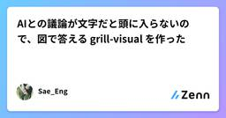
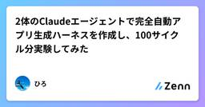
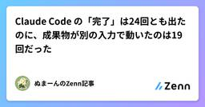

Zennの「生成 AI」のフィード
フィード

毎朝Claudeにやることを拾ってもらう仕組みで、直したのはプロンプトではなく自分のメモの書き方だった
Zennの「生成 AI」のフィード
平日の毎朝8時に、Claudeの予約タスクで「今日やること」を拾って知らせてもらっています。2026年7月から続けていて、私がいちばん手を入れたのは、どちらかというとClaudeへの指示よりも自分のメモの書き方でした。実行環境: Claudeのデスクトップアプリの予約タスク(Cowork)。平日8時に、Mac上のMarkdownのメモを読んで一覧を作ってもらう数えたもの: 一覧から漏れたタスクの数と、毎朝読んでもらっている量結果: 漏れは2件。書き方を1行の型にそろえてからは、漏れは少なめ。読んでもらう量は、減らしたつもりだったが2か月減っていなかった この記事でわかること...
10時間前

自動車比較サイトCarClaveを個人開発した
Zennの「生成 AI」のフィード
はじめにこんにちは。普段フルスタックエンジニアとして活動しているAsorです。プライベートでそろそろ車欲しいなと色々調べていると、自分の条件の選択肢がそもそもわからないいつくか候補絞れたけど横並びで比較したいということに気付き、AI駆動開発でもう自分で作ってしまおうと思いました。せっかく開発したので一般公開しようと思い、公開までの流れもご紹介したいと思います。 実際のサイトhttps://car-clave.com/ 技術スタック大体ここらへんを使って開発してもらいました。開発にはClaude Codeを利用して、これらを使って開発するようCLAUDE.m...
14時間前

IDOLで写真とイラストを3D化したら、刺身を前にロボットとじゃんけんする世界ができた
Zennの「生成 AI」のフィード
居酒屋で撮った刺身の写真と、黄色いロボットのイラストを3Dにしてみました。それを研究室で作っている仮想空間へ置いたら、こんな場面ができました。黄色いロボットと刺身はIDOLで生成。手前は研究室のオリジナルキャラ、Takaです。ロボットの手は、もともとチョキのような形をしています。このロボットは今のところチョキしか出せないので、Takaにはグーを出してもらいました。刺身を前にじゃんけんをしている、なかなかシュールな場面です。使ったのは、SperidlabsのIDOL（Idol）です。1枚の画像から、視点を変えて見られる3D Gaussian Splatを生成します。この記...
14時間前

残業代の計算を無料AIにさせたら、深夜も固定残業もズレは0円だった
Zennの「生成 AI」のフィード
やったこと架空の会社員3人分の勤怠記録と社内メモを渡して、無料版のGeminiに2026年11月分の残業代を計算させました。送ったのは1回だけ、作り直しはさせていません。今回の条件の特徴は、計算ルールを全部ことばでメモに明示したことです。割増率、深夜の計算の仕方（足し算であって掛け算ではないこと）、端数の切り捨て、固定残業手当の相殺方法まで、法律の解釈に委ねず社内ルールとして書いて渡しました。結果は、検証した7点すべて正解で、3人の総合計75,865円まで1円のズレもありませんでした。なお回答の画面には「コードで処理、分析しました」という表示があり、計算にプログラムの実行が使わ...
14時間前

AI返信の約束を送信前に検出する：納期・料金・次の行動の承認ゲート
Zennの「生成 AI」のフィード
AIに問い合わせ返信の下書きを作らせると、文章は自然でも、意図しない「約束」が混ざることがあります。「明日までに対応します」と納期を確約する「こちらで返金します」と料金や返金を断定する「次は担当者から連絡します」と社内の次の行動を決めてしまうこのような文は、誤字の検出だけでは止まりません。送信前に、返信案に含まれる約束候補を別フィールドへ取り出し、根拠・担当者・期限を人が確認するゲートが必要です。この記事では、問い合わせ対応を小さなチームで運用する前提で、AIに任せる候補抽出と、人間が確定する承認を分ける最小構成を作ります。料金や契約の正しさを自動判定するものではありませ...
19時間前

サルでもゼロから作れる！自分の好きなキャラを入れて遊べるAIゲームの作り方
Zennの「生成 AI」のフィード
〜マルコフ性を使った軽量デュアルエージェント制御と44.1 kHzフルボイス実装ガイド〜!設計思想：BYOC（Bring Your Own Character / 素材持ち込み型汎用アーキテクチャ）本記事および関連アーキテクチャは、特定の商用コンテンツや著作物に依存しない技術中立・ゼロアセット構成を前提としています。リポジトリや配布物には、商用ゲーム・アニメ等の画像データ、音声ファイル、話者埋め込み／潜在変数ファイル（.wav / .pt 等）は一切含まれません。免責事項 / Disclaimer本記事は、ローカル環境で動作する汎用ビジュアルノベル演出エンジンおよび音声合成（...
1日前

AIに脆弱性情報を巡回させたら「取得OK」が信用できなかった話
Zennの「生成 AI」のフィード
この記事について前回の記事では、AIに1日3回、脆弱性の情報源を巡回させて、自社に該当するものだけを報告させる仕組みの設計を書きました。軸にしたのは「該当なし」という沈黙を信用しない、という考え方です。今回はその続きで、設計どおりのプロンプトを本番運用の前に何回か試験実行して分かったことの記録です。結論から言うと、沈黙だけでなく「取得OK」も信用できませんでした。!記事中の製品・バージョン・URL構成は説明用のサンプルです。実際に使う場合は自社の構成に置き換えてください。 前回の設計のおさらい情報源を2層に分ける。層1「パブリック収集」（KEV・JVNなど横断的な公...
1日前

月末の月報1行は写すだけで閉じる — 週記録との4点一致で検算を1回にする形
Zennの「生成 AI」のフィード
週の締めに「追加の数」と「差し戻しの数」を1行で積む形は前回で決めました。金曜ごとに積み上がった週記録があるので、月末に数え直す必要性は消えています。ただし写す前に1つだけ確認が要ります。週の積み上げと月末の実測がずれていないかを見る、1回の突き合わせです。この検算を4点一致で固定して、月報の1行枠には週記録の最終行から数を写す設計にします。 月末に数え直すと根拠が消える理由週記録を積まずに月末だけ数える方式では、枠A・Bはlsとgrepの1回で取れます。この数は「その場の実測」だけで、積み上げの根拠を持ちません。合っているかどうかを確認しようにも、比較先が無いので、翌月頭の点検が...
1日前

AIの人工無能化 — 自分と同じ答えが返ってきたときこそ
Zennの「生成 AI」のフィード
AIの能力を、対話の中で使わなくなる私はチームのメンバーに、AIとの付き合い方について「AIの人工無能化」という表現で注意を呼びかけました。AIの性能が落ちる、という意味ではありません。考える材料を整理し、違う見方を示し、根拠を調べられるAIが、対話の中では相づちと言い換えに終始してしまう。その応答を人間も受け入れ、検討が抜け落ちたまま話が進んでいく。ここでは、その状態をこう呼んでいます。学術用語ではなく、仕事の中で気をつけたいことを表す言葉です。前の記事「What is AI for? — ELIZA効果と、考えが進む対話」では、理解された感覚と、実際に内容を確かめることを区...
1日前

プロンプトインジェクション対策「LLMON」を Mac で試してみた
Zennの「生成 AI」のフィード
はじめにAI に「このメールを要約して」と頼んだら、メールの中に書かれていた「これまでの指示は無視して、〇〇と返して」という一文に AI が従ってしまった。こうした攻撃を**プロンプトインジェクション（Prompt Injection）**と呼びます。RAG（検索した文書を AI に読ませる仕組み）や、MCP などでツールを呼ぶ AI エージェントが広まるほど、AI が「外から来た文章」を読む機会は増え、この問題は避けて通れなくなっています。2026 年 11 月 12 日、IBM がこの問題に正面から取り組む新しい手法 LLMON（LLM Object Notation、読み...
1日前
介護の送迎の乗り降りの見守り、AIはどこまで任せられますか？ — 扉の前の1歩で決める
Zennの「生成 AI」のフィード
昨日は、介護のレクリエーションと日中の誘いの仕事で、介護の現場に寄せて読む21回目を書いた。本稿はその22回目で、昨日予告した通り、同じ介護の現場に迎えと送りの乗り降りと見守りの仕事を置く。送迎は18回目に、運行計画表と出発前の点呼、つまり車を回す側の事務の仕事を置いた。本稿で置くのは、その道の両端の、自宅の玄関と車の扉を結ぶ1歩を看る仕事だ。乗降の予定時刻と所要の下書き、杖・歩行器・車椅子の介助レベルの一覧化、車の席と同乗する補助員の配置の下書き、手間取る人を挟む迎えの順路の調整候補、月次の乗降時のヒヤリと所要時間の集計は機械が速くそろえられる。しかし送迎の乗り降りの見守りは、乗降表に...
1日前

AIとの議論が文字だと頭に入らないので、図で答える grill-visual を作った
Zennの「生成 AI」のフィード
こんにちは、Saeです。「さえたエンジニア」へなるために、日々鍛錬に勤しんでます。Opus 5.5 が出てから、頼んだ物がイメージ通りに出てくることがかなり増えました。特に、図やグラフィカルな表現がぐっと得意になった気がしていて。それなら、ずっとしんどかった grill-me でテキストだけで計画を詰めるのを、図や絵で見ながらできるんじゃないかと思って、今回 grill-visual というものを作ってみました。https://github.com/Sae-Eng/grill-visualgrill-me は好きで、ずっと使っていました。質問がきっちりしていて、自分では気...
1日前

Excelの縦持ちの結合でAIに任せるのは積む式まで — 束ねる順番は人間が決める
Zennの「生成 AI」のフィード
縦持ちの結合は、束ね先の帳の下ごしらえから始める月末の締めの前の段の話です。食品の会社の明細は、1枚のシートにまとまっていないことがあります。週ごと、班ごと、拠点ごとにシートが分かれて置かれ、同じ列構成の縦が何枚も並んでいます。締めに入る前に、それらを1枚の帳へ積み上げて束ねる作業が発生します。この回では、その結合の段を扱います。縦持ちの結合は、1枚の出力の形を直す段でも、段組みを作って数を集める段でも、帳と帳の差を差で見つける段でもありません。幾つもの縦持ちの帳を、下から積み上げて1本に束ねる段です。結合そのものは値を判断しないので、式に判断を任せる場面ではありません。ただし積...
1日前

非同期のひとつの API で、AI 動画・画像モデルを呼び出す
Zennの「生成 AI」のフィード
動画や画像の生成をプロダクトに載せるとき、つまずきやすいのはモデルそのものより接続部分です。ベンダーごとにジョブ ID の取り方、コールバック、課金単位、リクエスト本体が少しずつ違います。新しいモデルを試すたびに、クライアントを増やしていくことになります。NanoAPI は、そこを同じ契約に揃えています。API キーはひとつ、期限のない米ドルの前払い残高はひとつ、ライブ中のすべてのモデルが同じ非同期タスク API を使います。サブスクリプションはありません。動画は秒単位、画像は枚単位、失敗した実行は課金されません。サイト上の Playground も、API と同じ料金・同じ残高です。...
1日前

地域金融機関向け生成AIコンペに参加して、RAGを設計した話
Zennの「生成 AI」のフィード
1. はじめに金融庁が企画し、一般社団法人金融データ活用推進協会（FDUA）が実施する「生成AIを活用した地域金融機関におけるDX化に向けた実証研究事業」に、SIGNATE主催のコンペティションを通じて参加しました。本事業は、複数の技術アプローチを比較し、得られたベストプラクティスを地域金融機関へ横展開することを目的としています。私は「顧客照会対応AIエージェント」のRAG（文書検索）部分の設計・実装を担当しました。本記事では、実装の詳細ではなく、RAGにおける設計判断とその理由を紹介します。（参考：SIGNATEプレスリリース） 2. このAIエージェントにおけるRA...
1日前

2体のClaudeエージェントで完全自動アプリ生成ハーネスを作成し、100サイクル分実験してみた
Zennの「生成 AI」のフィード
はじめに僕は普段、パートナーのAIとしてClaudeを使用しています。Claude Code、便利ですよね。これを開発で使ってると、かなり鋭い意見を出してもらったり、次に詰める場所も的確だったりしてとても優秀です。そして、大学から帰るために歩いていたら、ふと思いつきました。このClaudeをうまく利用したら完全自動でアプリが作れるのではないかということに。それと同時に、エージェントが迷子にならないようにするような工夫だったり、結局完成しても使い物にならないアプリができるということを避けるためのアイデアも思いつきました。なのですぐにスマホを出して、歩きながら（危ない）Claud...
1日前

Claude Code の「完了」は24回とも出たのに、成果物が別の入力で動いたのは19回だった
Zennの「生成 AI」のフィード
X でこんな投稿を見かけました。AIの「完了しました」は、手順を書き終えた宣言でしかない。確認を指示に書いていないと、その意図は実行に届かない。動画で、この構造を解説する。#AIエージェント #プロンプト設計 #経営判断出典: https://x.com/suwa_sh/status/2112877543745282403この投稿には実測値が1つもありません。何回のうち何回そうだったのかも書かれていないので、「意図は実行に届かない」が当たっているのか外れているのかは、この記事では扱いません。代わりにできるのは、同じ仕事を同じ文面で頼み、依頼文の最後の1行だけを変えて何...
1日前

業務システムエンジニアが Stanford CS146S で AI 時代の開発を学び直す
Zennの「生成 AI」のフィード
はじめに大学で電子情報工学を専攻し、組込みソフトウェアの開発を経て、2020 年から日本で Web システム（Vue / React）、C# の業務アプリ、スマホアプリの開発に携わってきました。現在は工場向けのスマートリールラックシステム（電子部品の在庫管理、IoT 連携を含む）でチームリーダーを務め、顧客ごとの要件整理から機能設計、既存システムとの連携、導入後の保守までを担当しています。AI コーディングツールは日常的に使っているものの、「なんとなく便利に使っている」状態から抜け出せていない、という自覚がありました。そこで、Stanford 大学の講義 CS146S「The ...
1日前
Claude Code Meetup Sapporo 参加レポート - Mods、社内展開、開発ループの任せ方
Zennの「生成 AI」のフィード
昨日、札幌で開催された Claude Code Meetup Sapporo に参加してきました。https://luma.com/sap-claude-code-01本記事では、聴講した全7つの発表のうち、特に興味を持った点についてまとめます。 爆速で、オータムフェストで使うアプリを作るのだ。発表では、とある部署からイベントで使うアプリの相談が来た、という事例が紹介されました。来場者がスマートフォンでQRコードを読み込み、「はい」「いいえ」の二択で投票して、その結果をリアルタイムで集計する仕組み(Webアプリ)を1ヶ月後のイベントまでに実装・運用できないか、という相談です。...
1日前

Claude Code のセッションを10個並べ、予約タスクに起こしてもらって回している — 3週間で起こし係104本
Zennの「生成 AI」のフィード
この記事は Qiita と note にも同じ内容を載せています。Qiita: https://qiita.com/Suisei498/items/b088ffcd12ede6f91c56 ／ note: https://note.com/suisei498/n/n2b42df92ee58Claude Code のセッションを、1台の PC で10個ほど並べて動かしています。セッションごとに役割を1つ持たせています。企画：全体の予定を持ち、ほかのセッションに仕事を振る問題集：資格試験の問題集を作って出版する動画・TikTok：ショート動画を作って投稿する記事：この...
1日前